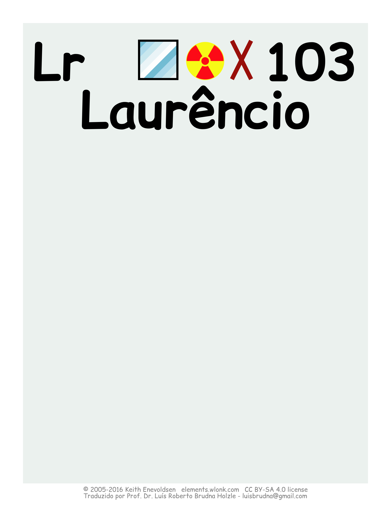

Tabela Periódica
Home
(Página atual)
Laurêncio

Quanto de elemento Laurêncio existe no(a)…
Número atômico: 103
Massa atômica: [262] u
Onde é encontrado o Laurêncio?
Não há uso significativo ou representativo para esse elemento.
Tenha aspecto metálico, sólido, de aspecto branco-prateado ou cinza;
Apresente o perigo da radiação, caso grandes quantidades sejam produzidas;
Seu comportamento é muito semelhante ao dos demais actinídeos, de acordo com trabalhos preliminares com alguns átomos.
Informações:
Número atômico: 103
Configuração eletrônica: [Rn]5f146d17s2
Número de massa do primeiro isótopo descoberto = 257 (meia vida = 8 segundos).
Massa atômica: (262,0) amu
Ponto de fusão: Desconhecido
Ponto de ebulição: Desconhecido
Número de prótons / Elétrons: 103
Número de nêutrons:159
Cristal Estrutura: Desconhecido
Densidade @ 293 K: Desconhecido
Cor: Desconhecido.
Data da descoberta: 1961
Descobridor: Albert Ghiorso